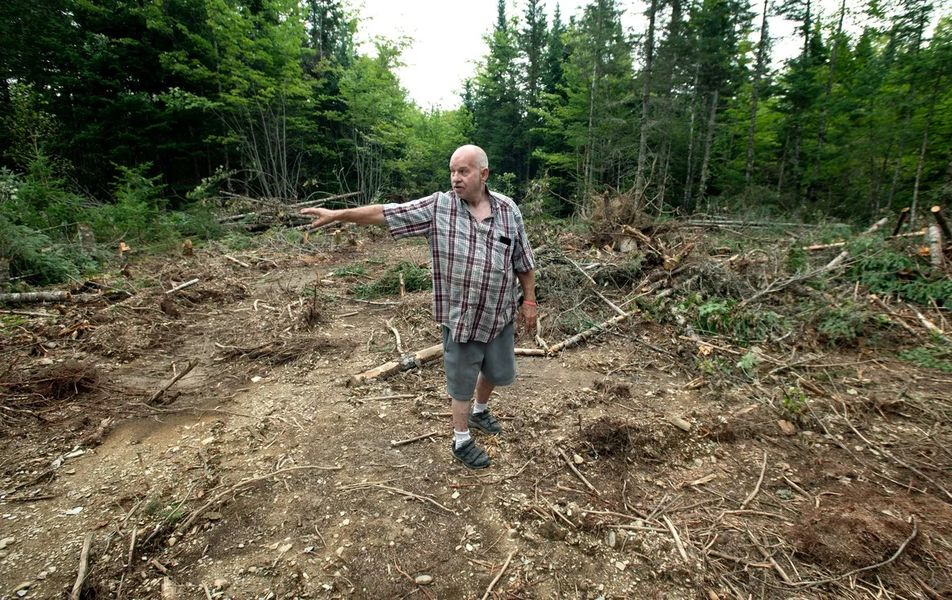

Timeline photos
Michael Tuller bought 35 acres of rural land in Bradford Maine for $47,000 to provide low cost housing solutions to formerly homeless people.
How did the city feel about that?
THEY HATED IT, OF COURSE!
The city approved a moratorium on ANYONE building rooming houses, shelters, campgrounds and tiny home parks in Bradford.
They don't even know exactly what he wants to do. But if it includes homeless people they don't want any part of it.
They would rather no one build anything than entertain the idea of allowing homeless people to have housing in their city.